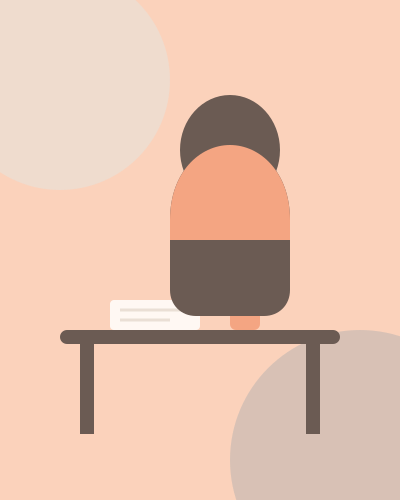

Rosa Briceño
Psicología y Psicoterapia
Un espacio de escucha, comprensión y acompañamiento para trabajar aquello que hoy está afectando tu bienestar emocional.

Un espacio para sentirte escuchado y acompañado
Soy Rosa Briceño, psicóloga y psicoterapeuta.
Mi trabajo parte de una idea sencilla: pedir ayuda psicológica no significa tener todas las respuestas, sino contar con un espacio seguro para comprender lo que estamos viviendo y encontrar nuevas formas de afrontarlo.
Acompaño a adolescentes y adultos que atraviesan dificultades relacionadas con la ansiedad, el estado de ánimo, la autoestima, las relaciones interpersonales, la regulación emocional y diferentes procesos de cambio o adaptación.
Mi formación está orientada principalmente al enfoque cognitivo-conductual (TCC) y la Activación Conductual, herramientas que me permiten trabajar de manera estructurada y, al mismo tiempo, adaptarme a las necesidades y características de cada persona.
En consulta encontrarás un espacio de escucha, respeto y ausencia de juicios, donde podamos comprender juntos lo que está ocurriendo, identificar aquello que puede estar manteniendo el malestar y desarrollar estrategias que puedas llevar a tu vida cotidiana.
Me gusta explicar las cosas de manera clara, utilizar ejemplos cuando es necesario, comprobar que lo trabajado tenga sentido para ti y construir los objetivos del proceso de manera colaborativa.
Formación
- Psicología.
- Maestría en Psicología Clínica y de la Salud — en formación.
- Formación en Terapia Cognitivo-Conductual.
- Formación en Activación Conductual.
- Especialización en TREC Infantojuvenil.
¿Qué podemos trabajar en terapia?
Cada proceso es diferente. Podemos trabajar aquello que está generando malestar, interfiriendo en tu vida cotidiana o que simplemente quieres comprender y cambiar.
Adultos
- Ansiedad y preocupaciones frecuentes
- Estado de ánimo bajo
- Autoestima
- Regulación emocional
- Relaciones interpersonales
- Dificultades de adaptación y cambios importantes
- Procesos de duelo
- Dificultades relacionadas con la vida personal o familiar
- Desarrollo de herramientas para afrontar situaciones difíciles
Adolescentes
- Ansiedad
- Estado de ánimo bajo
- Autoestima e inseguridad
- Regulación emocional
- Relaciones familiares y sociales
- Dificultades de adaptación
- Cambios propios de la adolescencia
- Problemas de conducta
- Dificultades relacionadas con el entorno escolar o social
Orientación a padres
Servicio complementario para acompañar la crianza:
- Comunicación con hijos adolescentes
- Manejo de límites
- Comprensión de determinadas conductas
- Acompañamiento emocional
- Estrategias para situaciones familiares específicas
Orientación psicológica
Espacio puntual para abordar una situación o dificultad específica, brindar orientación y explorar estrategias prácticas que permitan afrontarla de manera más efectiva.
Talleres y charlas psicoeducativas
Espacios grupales orientados a brindar información y herramientas prácticas sobre salud mental, bienestar emocional y relaciones, dirigidos a adolescentes, adultos, padres, instituciones educativas y organizaciones.
¿Cómo es el proceso?
El proceso se adapta a cada persona; esta es una guía general de cómo solemos avanzar juntas.
Nos conocemos
En la primera sesión exploramos qué estás viviendo, qué te preocupa y qué esperas encontrar en este espacio.
Comprendemos lo que ocurre
Identificamos pensamientos, emociones, conductas y situaciones relacionadas con el malestar.
Definimos objetivos
Establecemos juntos qué aspectos queremos trabajar y qué cambios serían significativos para ti.
Desarrollamos herramientas
Trabajamos estrategias psicológicas adaptadas a tus necesidades para afrontar las dificultades de manera diferente.
Revisamos tus avances
Observamos qué está funcionando, qué necesita ajustarse y cómo continuar avanzando.
Este recorrido es solo una guía: no es una fórmula rígida, y se adapta al ritmo y las necesidades de cada persona.
Psicoterapia online
La atención psicológica se realiza de manera virtual, permitiéndote acceder a un espacio de acompañamiento desde un lugar privado y tranquilo.
Para una sesión se recomienda:
- Contar con un espacio privado.
- Tener una conexión estable a internet.
- Utilizar audífonos si ayudan a mantener la privacidad.
- Evitar realizar la sesión mientras se conduce o se realizan otras actividades.
Tarifas
Puedes iniciar con una sesión individual; los paquetes son solo una opción para dar continuidad al proceso.
Los paquetes permiten organizar el proceso terapéutico con mayor continuidad. No es necesario adquirir un paquete para comenzar: puedes iniciar pagando una sesión individual.
La experiencia de quienes ya dieron el paso
Muy pronto compartiré aquí testimonios de pacientes que hayan autorizado su publicación, respetando siempre la confidencialidad del proceso terapéutico.
Preguntas frecuentes
No es necesario tener un diagnóstico o saber exactamente qué te ocurre para solicitar orientación. Si existe una situación que genera malestar o que quieres comprender y trabajar, podemos conversarlo en una primera sesión.
Las sesiones tienen una duración aproximada de 55 minutos.
La modalidad principal de atención es online, a través de Google Meet, Zoom o WhatsApp.
Sí. La atención está dirigida tanto a adolescentes como a adultos.
No. Parte del proceso inicial consiste precisamente en comprender qué está ocurriendo y definir qué aspectos sería importante trabajar.
Puedes escribirme directamente por WhatsApp al 977 463 071 para consultar disponibilidad y coordinar una sesión.
Se solicita avisar con al menos 24 horas de anticipación para reprogramar. La sesión debe ser reprogramada dentro de los 5 días siguientes a la fecha de cancelación.
Dar el primer paso
No tienes que tener todo claro para empezar. Escríbeme y conversemos sobre cómo puedo acompañarte.